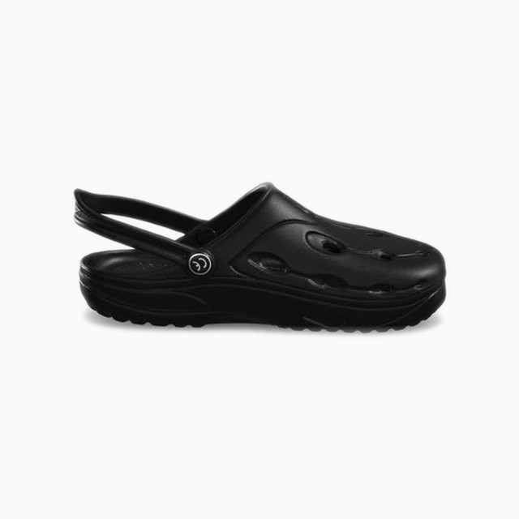

Chung Shi präsentiert
DUX. Barfuß-Gefühl.
Neu definiert.
Die Sandale DUX vereint das patentierte Duflex-Material mit einem minimalistischen Design – flexibel wie eine zweite Haut, robust für jeden Alltag.

Eine Marke von
Kostenloser Versand
Ab 50 € Bestellwert – bequem nach Hause.
30 Tage Rückgabe
Passt nicht? Einfach kostenlos zurücksenden.
2 Jahre Garantie
Auf Material und Verarbeitung der DUX.
Warum DUX anders ist
Drei Eigenschaften, die das Duflex-Material zur Basis moderner Gesundheitsschuhe machen.
360° Flexibilität
Die Sohle biegt sich in alle Richtungen mit deinem Fuß mit – für ein natürliches Abrollverhalten wie barfuß.
Dämpfung & Rückfederung
Das offenzellige Duflex-Material federt Stöße ab und gibt Energie bei jedem Schritt zurück.
Leicht & wasserfest
Kein Wasser wird aufgesogen, kein Geruch entsteht – ideal für Alltag, Reise und Freizeit.
Scroll weiter
Dreh die DUX
Scroll, um den Schuh von allen Seiten zu sehen.
DUX im Vergleich
Was die Duflex-Technologie gegenüber einer herkömmlichen Sandale ausmacht.
Wähle deine Farbe
Ein Klick genügt – probier es aus.
Aktuelle Farbe: Orange
Das sagen Träger:innen
Häufige Fragen
Duflex ist ein von Chung Shi entwickeltes, offenzelliges Sohlenmaterial, das extrem flexibel, leicht und dämpfend ist.
Ja – durch die Rückfederung und das natürliche Abrollverhalten eignet sich DUX auch für längere Spaziergänge.
Genau – dies ist eine Demo-/Übungsseite, um die Funktionsweise von HTML, CSS und JavaScript kennenzulernen. Es ist keine offizielle Chung-Shi-Seite.
Bereit für das DUX-Gefühl?
Fülle das Formular aus – deine Anfrage wird per E-Mail an uns gesendet.